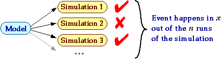
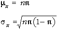
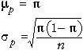
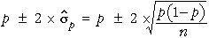

By repeating a simulation several times, we can estimate the probabilities of events associated with the model.

The proportion of runs in which the event occurs, p = x/n, provides a point estimate of the event's probability. For example, the proportion of simulated soccer leagues won by Team A is a point estimate of the probability of Team A ending the season top of the league, π.
By performing enough simulations, we can estimate probabilities to arbitrary accuracy but, from a finite number of simulations, a confidence interval should be used to indicate the range of errors likely in our estimate.
Binomial Distribution
In a simulation,
These are the main assumptions underlying the binomial distribution. Therefore the number of times, x, that an event occurs in n runs of the simulation has a binomial distribution with parameters n and π where
π= P(event happens)
The distribution of the proportion of successes, p = x/n, has the same shape as that of x but with different scaling.
(If you are not comfortable with the binomial distribution, study the sections about it in CAST.)
Normal Approximation to Binomial
A confidence interval for π can be found directly from the binomial distribution of x, but we first describe a simpler approach. The binomial distribution is close in shape to a normal distribution whose mean and standard deviation are

The diagram below shows the shape of the binomial distribution and its normal approximation. Drag the two sliders to adjust the two parameters n and π and confirm that the normal approximation is close in shape to the binomial distribution when n is large and π is not close to either 0 or 1..
Drag over the bars of the binomial barchart to check that probabilities obtained from the normal approximation are also close to the exact binomial probabilities when n is fairly large.
In a similar way, the proportion of successes, p, is approximately normal with parameters

Confidence Interval for Proportion
Since any normally distributed quantity has approximately 95% probability of being within 2 standard deviations of its mean, p will be within 2 standard deviations of π with 95% probability, so a 95% confidence interval is

(If you are unfamiliar with the properties or interpretation of confidence intervals, study these sections in CAST.)
League Table Example
We again simulate a league of 10 teams in which each pair of teams plays twice. All teams are evenly matched except for Team A whose probability of winning each game can be altered in the simulation. We again assume that P(draw) = 0.2 for all matches.
Initially Team A has probability 0.6 of winning each match (and 0.2 of losing). Click Next Run several times to perform simulations. The proportion of simulated leagues in which Team A ended top is shown (highlighted in yellow) and the resulting 95% confidence interval is also displayed numerically and graphically.
Click on other rows of the table to change the probability of Team A winning its matches, and perform more simulations. Perform about 100 simulations for each different value of π. (Hold down the button Next Run to speed up the simulations.)
Observe how the confidence intervals become narrower as more simulations are performed, but an extremely large number of simulations is needed to estimate the probabilities accurately.
Exact Confidence Interval
The normal approximation to the binomial is poor when either n is small or π is near 0 or 1. Confidence interval based on this normal approximation are therefore also inaccurate in these circumstances.
In the league simulation, click Reset. Based on a single run of the simulation, p is either 0 or 1 and the confidence interval based on a normal approximation has zero — this clearly overestimates the accuracy of our estimate!!
An exact 95% confidence interval can be found directly from the binomial distribution but its formula is rather more complex. Use the pop-up menu under the simulation diagram to select the algorithm Exact to see the exact 95% confidence intervals.
The endpoints of the exact 95% confidence intervals can be obtained in Excel by typing the following formulae into two cells:
| =x/(x+(n-x+1) *FINV(0.025, 2*(n-x+1), 2*x )) |
| =(x+1) * FINV(0.025, 2*(x+1), 2*(n-x) )/(n-x+(x+1) *FINV(0.025, 2*(x+1), 2*(n-x) )) |
where x and n should be replaced by the numbers of 'successes' and 'trials' in the your simulations.